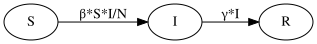
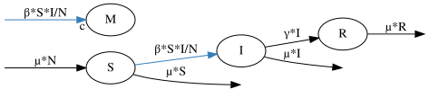

Defining a Model#
In the previous chapters we introduced compartmental models in terms of:
Compartments
Parameters
Transitions
Events (which trigger the Transitions)
We now show how these concepts are represented to build a model in PyGOM, using an SIR model as an example throughout.
States and Parameters#
We start by defining the model states and parameters.
states = ['S', 'I', 'R']
params = ['beta', 'gamma', 'N']
The state names correspond to the compartments introduced previously. Parameter names refer to variables which appear in the model (for example, in transition rate equations) but do not represent compartments.
If, once the model is built, we wish to perform simulations, the solver requires information on the state numerical limits. By default, state variables are assumed to lie in the interval, \([0, \infty)\), which is appropriate for quantities representing counts or populations. Custom bounds can be specified by replacing a state name with a tuple containing the state name and a tuple of its limits:
states = [
('S', (0, None)),
('I', (0, None)),
('R', (0, None))
]
where, in this example, we have simply restated the default options.
Derived parameters#
Derived parameters are algebraic quantities defined in terms of states, parameters or other derived parameters.
They can be useful for:
Reducing the number of unecessary model parameters
Avoiding duplication of lengthy common expressions
Tracking quantities not accounted for by states or parameters
Note
In PyGOM, derived parameters do not yet form part of the simulation output and so do not currently serve the latter purpose.
If the user is interested in evolution of derived quantities, for example, the ratio of two compartment populations, then this must be perfomed as a post processing step.
In our SIR example, the parameter \(N\) is determined by \(N = S + I + R\) and so is a redundant parameter. By defining it as a derived parameter, we avoid the need to specify a numerical value for it when required.
derived_params = [('N', 'S+I+R')]
Transitions#
As discussed previously, a transition describes the movement of entities between compartments, or into and out of the modelled system. PyGOM supports three transition types:
Between-state transitions
Birth transitions
Death transitions
Each transition may additionally specify a magnitude, giving the number of units moved per transition. For the basic SIR model we require two transitions:
from pygom import Transition
transition_inf = Transition(origin='S', destination='I')
transition_rec = Transition(origin='I', destination='R')
The full constructor also allows explicit specification of the transition type and magnitude:
transition_inf = Transition(
origin='S',
destination='I',
transition_type='T',
magnitude='1'
)
However, PyGOM can infer the transition type (births only have a destintaion, deaths an origin and transitions have both) and a magnitude of one is assumed by default.
It is up to the user which they prefer, but being explicit about the transition type can prevent misspecification of births and deaths. For instance, a death transition of a susceptible can be specified in two ways:
transition_death = Transition(origin='S')
transition_death = Transition(origin='S', transition_type='D')
In the latter case, if we’d have specified a destination instead, PyGOM would warn us to consider if we wished to define a birth or death process.
Events#
An Event object is defined by the transition (or transitions) that it triggers and the rate at which it occurs.
For the SIR model, the infection and recovery events are defined as:
from pygom import Event
event_inf = Event(transition_list=[transition_inf], rate='beta*S*I/N')
event_rec = Event(transition_list=[transition_rec], rate='gamma*I')
In this simple example each event contains a single transition and so wrapping Transition objects inside Events can seem unnecessary.
A shorthand, when an event involves only one transition, is to include the rate information in the Transition, this time as a parameter, equation.
This Transition will then be interpreted as an Event when passed to PyGOM.
For example, the infection event:
transition_inf = Transition(origin='S', destination='I', equation='beta*S*I/N')
More generally, however, an event may trigger several transitions simultaneously.
Constructing the model#
We are now ready to construct the model in PyGOM.
We do so by feeding the ojects defined above into the SimulateODE class.
from pygom import SimulateOde
model = SimulateOde(
state=states,
param=params,
event=[event_inf, event_rec]
)
Verification#
Before proceeding to simulation, it is often useful to verify that the model has been interpreted as intended. We can see that the mathematical objects of the previous chapter are automatically constructed by pygom. We recover the state vector, \(\mathbf{y}\):
model.state_list
[S, I, R]
the state-change matrix, \(\mathcal{D}\):
model.state_change_matrix.get_equation()
and the event-rate vector, \(\boldsymbol{\lambda}\):
model.event_rate_vector.get_equation()
We can also verify the set of ODEs which PyGOM has built:
model.ode.get_equation()
and it can be helpful to visually inspect that the model is defined as intended:
graph = model.get_transition_graph(show=False)
graph

Extended example#
We now provide an extended SIR example which combines all of the aspects outlined in this chapter.
We now add the vital dynamics of birth and death. In doing so, the total population, \(N\), is not necessarily constant. To track the potential evolution of this variable, one solution is to redefine it as a state. Alternatively, and what we shall do here, we can make it a derived parameter.
Secondly, as with the example in previous chapters, we introduce a cost per infection of, \(c\).
params = ['beta', 'gamma', 'mu', 'c']
derived_params = [('N', 'S+I+R')]
states = ['S', 'I', 'R', 'M']
# 1) Birth event into S
birth = Transition(destination="S", transition_type="B") # Note: transition_type="B" not strictly required
event_birth = Event(transition_list=[birth], rate='mu*N')
# 2) Death event of an S
death_S = Transition(origin="S", transition_type="D") # Note: transition_type="B" not strictly required
event_death_S = Event(transition_list=[death_S], rate='mu*S')
# 3) Death event of an I
death_I = Transition(origin="I", transition_type="D")
event_death_I = Event(transition_list=[death_I], rate='mu*I')
# 4) Death event of an R
death_R = Transition(origin="R", transition_type="D")
event_death_R = Event(transition_list=[death_R], rate='mu*R')
# Infection
transition_inf = Transition(origin='S', destination='I', transition_type='T')
transition_cost = Transition(destination='M', transition_type='B', magnitude='c')
event_inf = Event(transition_list=[transition_inf, transition_cost], rate='beta*S*I/N')
model = SimulateOde(
state=states,
param=params,
derived_param=derived_params,
event=[
event_inf,
event_rec,
event_birth,
event_death_S,
event_death_I,
event_death_R
]
)
As before, we can inspect the ODEs
model.ode.get_equation()
and compartmental model graph:
graph = model.get_transition_graph(show=False)
graph

Defining Models with ODEs Instead#
For compartmental models, we generally recommend defining models in terms of transitions and events. This is because ODEs only form a particular representation and obscure details of the fundamental structure, without which, actions such as stochastic simulation are not possible. Furthermore, building with transitions is a safer approach and enables the computer to do our book-keeping when converting transitions to ODE equations. This removes the potential error of, for example, including a flow out of one state, but forgetting to include it in the recipient state.
In some situations, however, only a system of ODEs may be available and PyGOM therefore also supports direct ODE specification. For our current example:
To build a PyGOM object from this, we use Transition classes of the transition_type, ODE with the dependent variable is set to be origin.
These ODE transition objects are then passed to SimulateODE via the ode argument.
Warning
This syntax, which mixes ODE and transition concepts has the potential to be confusing and will likely be replaced in the next version.
dSdt = Transition(transition_type='ODE', origin='S', equation='-beta*S*I/N + mu*N - mu*S')
dIdt = Transition(transition_type='ODE', origin='I', equation='beta*S*I - gamma*I - mu*I')
dRdt = Transition(transition_type='ODE', origin='R', equation='gamma*I - mu*R')
dMdt = Transition(transition_type='ODE', origin='M', equation='beta*S*I/N')
model_ode = SimulateOde(
state=states,
param=params,
ode=[dSdt, dIdt, dRdt, dMdt]
)
When a model is specified directly through ODEs, PyGOM no longer has access to the underlying event structure. As a consequence, quantities such as the state-change matrix cannot be constructed and stochastic simulation methods are unavailable. For instance, PyGOM now cannot derive a state change matrix
model_ode.state_change_matrix.get_equation()
Warning
Combining ODEs and Transitions
There could be cases where a system contains both stochastic and deterministic elements. In our example, we might suppose that costs associated with treatment increase in proportion to the number of people currently infected. Whilst deaths, for example, occur stochastically at a given rate, costs can instead increase deterministially.
Such hybrid modelling is not currently possible in pygom and so users should only commit to pure ODE or compartmental systems.